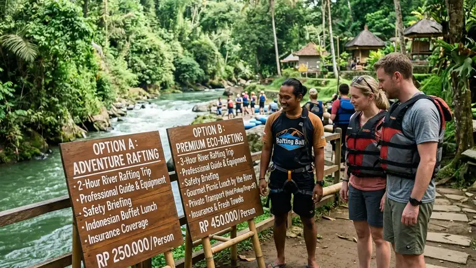

Harga paket rafting Kaliwatu umumnya mulai dari sekitar Rp180.000 hingga Rp215.000 per orang, sementara harga paket Kasembon mulai dari sekitar Rp215.000 hingga Rp450.000 per orang tergantung jenis trip.
- Paket reguler Kaliwatu relatif lebih terjangkau dibandingkan Kasembon.
- Kasembon menawarkan variasi paket seperti family trip, adventure trip, dan night trip dengan rentang harga lebih lebar.
- Harga umumnya sudah mencakup perlengkapan keselamatan, guide, dan asuransi dasar.
- Diskon rombongan besar tersedia di kedua lokasi, namun kebijakannya perlu dikonfirmasi langsung ke operator.
Berapa Kisaran Harga Rafting Kaliwatu?
Harga paket rafting Kaliwatu umumnya mulai dari sekitar Rp180.000 per orang untuk paket reguler dan dapat mencapai kisaran Rp1.500.000 apabila digabung dengan aktivitas tambahan seperti paintball atau mountain bike.
Berdasarkan informasi yang dipublikasikan sejumlah operator wisata pada 2024 dan 2025, harga dasar rafting Kaliwatu berkisar antara Rp180.000 hingga Rp215.000 per orang untuk kelompok minimal empat orang. Harga ini umumnya sudah mencakup perlengkapan rafting lengkap, guide, welcome drink, dan asuransi kecelakaan dasar selama berada di area basecamp.
Untuk rombongan di atas 20 orang, sebagian besar operator Kaliwatu menawarkan skema harga khusus yang perlu dikonfirmasi langsung melalui kontak resmi mereka.
Berapa Kisaran Harga Rafting Kasembon?
Harga paket rafting Kasembon umumnya mulai dari sekitar Rp215.000 per orang dan dapat mencapai sekitar Rp450.000 per orang tergantung jenis paket yang dipilih.
Operator Kasembon umumnya membagi paketnya menjadi beberapa kategori, seperti family trip untuk kebutuhan keluarga, adventure trip untuk peserta yang mencari tantangan lebih, dan night trip untuk pengalaman rafting pada malam hari. Rentang harga yang lebih lebar ini sejalan dengan variasi fasilitas tambahan, seperti local transport, coffee break, dan menu makan siang yang berbeda pada setiap paket.
Sebagai destinasi yang juga sering digunakan untuk kegiatan outbound korporat, Kasembon umumnya menyediakan skema harga khusus untuk rombongan perusahaan dengan jumlah peserta yang lebih besar.
Apa Saja yang Termasuk dalam Harga Paket Rafting?
Harga paket rafting umumnya sudah mencakup perlengkapan keselamatan, jasa guide, asuransi dasar, dan minuman selamat datang, meski detail fasilitas tambahan berbeda antar operator.
Pada rafting Kaliwatu, komponen yang biasa termasuk dalam harga adalah perahu karet, dayung, pelampung, helm, guide berpengalaman, dan asuransi kecelakaan. Pada rafting Kasembon, komponen tambahan yang sering disertakan meliputi rescue team khusus, local transport dari titik finish, coffee break, serta makan siang bagi peserta.
Sebelum memesan, calon peserta sebaiknya menanyakan secara rinci apakah harga yang ditawarkan sudah termasuk makan siang, dokumentasi foto, atau hanya mencakup aktivitas rafting saja, karena kebijakan setiap paket dapat berbeda meski nama paketnya terdengar serupa.
Mana yang Lebih Ekonomis untuk Rombongan Besar?
Kaliwatu umumnya lebih ekonomis untuk rombongan kecil hingga menengah yang menginginkan trip singkat, sedangkan Kasembon dapat lebih menguntungkan untuk rombongan besar yang membutuhkan paket outbound lengkap dalam satu lokasi.
Karena lokasinya yang lebih dekat dengan Kota Batu, Kaliwatu dapat menghemat biaya transportasi dan waktu perjalanan bagi rombongan dari Malang Raya. Di sisi lain, Kasembon yang menyediakan paket lebih variatif, termasuk kombinasi rafting dan aktivitas outbound seperti flying fox atau paintball, bisa menjadi pilihan lebih efisien bagi perusahaan yang ingin mengadakan satu acara gathering dengan banyak aktivitas sekaligus di satu tempat.
Bagaimana Cara Membandingkan Harga Sebelum Memesan?
Cara paling efektif membandingkan harga adalah dengan meminta rincian paket tertulis dari kedua operator, termasuk jumlah peserta minimal, fasilitas yang termasuk, dan kebijakan pembatalan.
Selain membandingkan angka nominal, penting juga memperhatikan rasio antara harga dan fasilitas yang didapat, seperti jumlah guide per perahu, ketersediaan dokumentasi, dan menu makan yang disediakan. Membandingkan setidaknya tiga operator berbeda, termasuk Kaliwatu, Kasembon, dan destinasi rafting lain di Malang Raya, dapat membantu memastikan Anda mendapatkan penawaran yang paling sesuai dengan anggaran dan ekspektasi.
FAQ
Berapa harga minimal rafting Kaliwatu per orang?
Harga minimal rafting Kaliwatu umumnya berkisar Rp180.000 per orang untuk paket reguler dengan jumlah peserta minimal empat orang.
Berapa harga minimal rafting Kasembon per orang?
Harga minimal rafting Kasembon umumnya berkisar Rp215.000 per orang, tergantung jenis paket yang dipilih.
Apakah harga paket rafting sudah termasuk makan siang?
Sebagian paket rafting Kaliwatu dan Kasembon sudah termasuk makan siang, namun sebaiknya dikonfirmasi langsung karena kebijakan setiap paket berbeda.
Arya
penulis artikel yang sudah berpengalaman di dalam dunia wisata outbound Batu Malang.